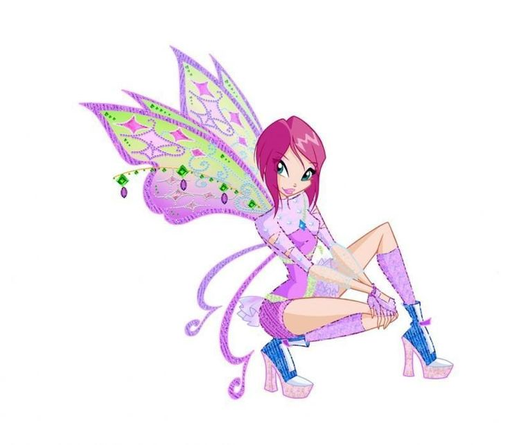

Текна — умная и рассудительная фея технологий, отлично разбирающаяся в науке, логике и технике.
Текна — фея технологий, которая славится своим высоким интеллектом и аналитическим мышлением. Она умеет быстро находить решения, хорошо понимает сложные механизмы и часто помогает подругам советами в непростых ситуациях. Её магия связана с цифровыми системами, энергией и научными знаниями. Несмотря на внешнюю сдержанность, Текна очень преданна друзьям и всегда готова прийти на помощь.